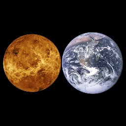

The Solar System is the gravitationally bound system of the Sun and the objects that orbit it, either directly or indirectly. Of the objects that orbit the Sun directly, the largest are the eight planets, with the remainder being smaller objects, the dwarf planets and small Solar System bodies. Of the objects that orbit the Sun indirectly—the natural satellites—two are larger than the smallest planet, Mercury.The Solar System formed 4.6 billion years ago from the gravitational collapse of a giant interstellar molecular cloud. The vast majority of the system's mass is in the Sun, with the majority of the remaining mass contained in Jupiter. The four smaller inner system planets, Mercury, Venus, Earth and Mars, are terrestrial planets, being primarily composed of rock and metal. The four outer system planets are giant planets, being substantially more massive than the terrestrials.
A star is an astronomical object consisting of a luminous spheroid of plasma held together by its own gravity. The nearest star to Earth is the Sun. Many other stars are visible to the naked eye at night, but due to their immense distance from Earth they appear as fixed points of light in the sky. The most prominent stars are grouped into constellations and asterisms, and many of the brightest stars have proper names. Astronomers have assembled star catalogues that identify the known stars and provide standardized stellar designations.
A galaxy is a gravitationally bound system of stars, stellar remnants, interstellar gas, dust, and dark matter. The word is derived from the Greek galaxias (γαλαξίας), literally "milky", a reference to the Milky Way. Galaxies range in size from dwarfs with just a few hundred million (108) stars to giants with one hundred trillion (1014) stars, each orbiting its galaxy's center of mass.Galaxies are categorized according to their visual morphology as elliptical, spiral, or irregular. Many are thought to have supermassive black holes at their centers.
An astronomical object or celestial object is a naturally occurring physical entity, association, or structure that exists in the observable universe. In astronomy, the terms object and body are often used interchangeably. However, an astronomical body or celestial body is a single, tightly bound, contiguous entity, while an astronomical or celestial object is a complex, less cohesively bound structure, which may consist of multiple bodies or even other objects with substructures.Examples of astronomical objects include planetary systems, star clusters, nebulae, and galaxies, while asteroids, moons, planets, and stars are astronomical bodies. A comet may be identified as both body and object: It is a body when referring to the frozen nucleus of ice and dust, and an object when describing the entire comet with its diffuse coma and tail.
A space probe, or simply probe, is a robotic spacecraft that doesn't orbit the Earth, but instead explores farther into outer space. A space probe may approach the Moon; travel through interplanetary space; flyby, orbit, or land or fly on other planetary bodies; or enter interstellar space.
The space agencies of the USSR (now Russia, Ukraine and others), the United States, the European Union, Japan, China, India, and Israel have collectively launched probes to several planets and moons of the Solar System, as well as to a number of asteroids and comets. Approximately 15 missions are currently operational.
Mercury is the smallest planet in the Solar System and the closest to the Sun. Its orbit around the Sun takes 87.97 Earth days, the shortest of all the Sun's planets. It is named after the Roman god Mercurius (Mercury), god of commerce, messenger of the gods, and mediator between gods and mortals, corresponding to the Greek god Hermes (Ἑρμῆς). Like Venus, Mercury orbits the Sun within Earth's orbit as an inferior planet, and its apparent distance from the Sun as viewed from Earth never exceeds 28°
‹
›
Name
Mercury
Semi Major Axis
57909227 km
perihelion
46001200 km
aphelion
69816900 km
eccentricity
0.2056
inclination
7 °
length of year
87.969 days
length of a day
1407.6 hours
axial tilt
0.0352 °
mean anomaly
174.796 °
moons
No moons
mass
3.30114 × 10^23 kg
volume
6.083 × 10^10 m^3
density
5.4291 g/cm^3
gravity
3.7 m/s^2
escape velocity
4250 m/s
mean radius
2439.4 m
equilateral radius
2440.53 m
polar radius
2439.7 m
flattening
0
. This proximity to the Sun means the planet can only be seen near the western horizon after sunset or the eastern horizon before sunrise, usually in twilight. At this time, it may appear as a bright star-like object but is often far more difficult to observe than Venus. From Earth, the planet telescopically displays the complete range of phases, similar to Venus and the Moon, which recurs over its synodic period of approximately 116 days.
Mercury rotates in a way that is unique in the Solar System. It is tidally locked with the Sun in a 3:2 spin–orbit resonance, meaning that relative to the fixed stars, it rotates on its axis exactly three times for every two revolutions it makes around the Sun. As seen from the Sun, in a frame of reference that rotates with the orbital motion, it appears to rotate only once every two Mercurian years. An observer on Mercury would therefore see only one day every two Mercurian years.
Mercury's axis has the smallest tilt of any of the Solar System's planets (about 1⁄30 degree). Its orbital eccentricity is the largest of all known planets in the Solar System; at perihelion, Mercury's distance from the Sun is only about two-thirds (or 66%) of its distance at aphelion. Mercury's surface appears heavily cratered and is similar in appearance to the Moon's, indicating that it has been geologically inactive for billions of years. Having almost no atmosphere to retain heat, it has surface temperatures that vary diurnally more than on any other planet in the Solar System, ranging from 100 K (−173 °C; −280 °F) at night to 700 K (427 °C; 800 °F) during the day across the equatorial regions. The polar regions are constantly below 180 K (−93 °C; −136 °F). The planet has no known natural satellites.
Two spacecraft have visited Mercury: Mariner 10 flew by in 1974 and 1975; and MESSENGER, launched in 2004, orbited Mercury over 4,000 times in four years before exhausting its fuel and crashing into the planet's surface on April 30, 2015. The BepiColombo spacecraft is planned to arrive at Mercury in 2025.
Venus is the second planet from the Sun. It is named after the Roman goddess of love and beauty. As the brightest natural object in Earth's night sky after the Moon, Venus can cast shadows and can be, on rare occasions, visible to the naked eye in broad daylight. Venus lies within Earth's orbit, and so never appears to venture far from the Sun, either setting in the west just after dusk or rising in the east a little while before dawn. Venus orbits the Sun every 224

‹
›
Name
Venus
Semi Major Axis
108208475 km
perihelion
107477000 km
aphelion
108939000 km
eccentricity
0.0067
inclination
3.39 °
length of year
224.701 days
length of a day
-5832.5 hours
axial tilt
177.36 °
mean anomaly
50.115 °
moons
No moons
mass
4.86747 × 10^24 kg
volume
9.2843 × 10^11 m^3
density
5.243 g/cm^3
gravity
8.87 m/s^2
escape velocity
10360 m/s
mean radius
6051.8 m
equilateral radius
6051.8 m
polar radius
6051.8 m
flattening
0
.7 Earth days. It has a synodic day length of 117 Earth days and a sidereal rotation period of 243 Earth days. As a consequence, it takes longer to rotate about its axis than any other planet in the Solar System, and does so in the opposite direction to all but Uranus. This means the Sun rises in the west and sets in the east. Venus does not have any moons, a distinction it shares only with Mercury among the planets in the Solar System.Venus is a terrestrial planet and is sometimes called Earth's "sister planet" because of their similar size, mass, proximity to the Sun, and bulk composition. It is radically different from Earth in other respects. It has the densest atmosphere of the four terrestrial planets, consisting of more than 96% carbon dioxide. The atmospheric pressure at the planet's surface is about 92 times the sea level pressure of Earth, or roughly the pressure at 900 m (3,000 ft) underwater on Earth. Even though Mercury is closer to the Sun, Venus has the hottest surface of any planet in the Solar System, with a mean temperature of 737 K (464 °C; 867 °F). Venus is shrouded by an opaque layer of highly reflective clouds of sulfuric acid, preventing its surface from being seen from space in visible light. It may have had water oceans in the past, but these would have vaporized as the temperature rose under a runaway greenhouse effect. The water has probably photodissociated, and the free hydrogen has been swept into interplanetary space by the solar wind because of the lack of a planetary magnetic field.As one of the brightest objects in the sky, Venus has been a major fixture in human culture for as long as records have existed. It has been made sacred to gods of many cultures, and has been a prime inspiration for writers and poets as the "morning star" and "evening star". Venus was the first planet to have its motions plotted across the sky, as early as the second millennium BC.Its proximity to Earth has made Venus a prime target for early interplanetary exploration. It was the first planet beyond Earth visited by a spacecraft (Mariner 2 in 1962), and the first to be successfully landed on (by Venera 7 in 1970). Venus's thick clouds render observation of its surface impossible in visible light, and the first detailed maps did not emerge until the arrival of the Magellan orbiter in 1991. Plans have been proposed for rovers or more complex missions, but they are hindered by Venus's hostile surface conditions. The possibility of life on Venus has long been a topic of speculation, and in recent years has received active research.
Earth is the third planet from the Sun and the only astronomical object known to harbour and support life. About 29.2% of Earth's surface is land consisting of continents and islands. The remaining 70.8% is covered with water, mostly by oceans, seas, gulfs, and other salt-water bodies, but also by lakes, rivers, and other freshwater, which together constitute the hydrosphere
‹
›
Name
Earth
Semi Major Axis
149598262 km
perihelion
147095000 km
aphelion
152100000 km
eccentricity
0.0167
inclination
0 °
length of year
365.256 days
length of a day
23.9345 hours
axial tilt
23.4393 °
mean anomaly
358.617 °
moons
1
mass
5.97237 × 10^24 kg
volume
1.08321 × 10^12 m^3
density
5.5136 g/cm^3
gravity
9.8 m/s^2
escape velocity
11190 m/s
mean radius
6371.0084 m
equilateral radius
6378.1366 m
polar radius
6356.8 m
flattening
0.00335
. Much of Earth's polar regions are covered in ice. Earth's outer layer is divided into several rigid tectonic plates that migrate across the surface over many millions of years, while its interior remains active with a solid iron inner core, a liquid outer core that generates Earth's magnetic field, and a convective mantle that drives plate tectonics.
Earth's atmosphere consists mostly of nitrogen and oxygen. More solar energy is received by tropical regions than polar regions and is redistributed by atmospheric and ocean circulation. Greenhouse gases also play an important role in regulating the surface temperature. A region's climate is not only determined by latitude, but also by elevation and proximity to moderating oceans, among other factors. Severe weather, such as tropical cyclones, thunderstorms, and heatwaves, occurs in most areas and greatly impacts life.
Earth's gravity interacts with other objects in space, especially the Moon, which is Earth's only natural satellite. Earth orbits around the Sun in about 365.25 days. Earth's axis of rotation is tilted with respect to its orbital plane, producing seasons on Earth. The gravitational interaction between Earth and the Moon causes tides, stabilizes Earth's orientation on its axis, and gradually slows its rotation. Earth is the densest planet in the Solar System and the largest and most massive of the four rocky planets.
According to radiometric dating estimation and other evidence, Earth formed over 4.5 billion years ago. Within the first billion years of Earth's history, life appeared in the oceans and began to affect Earth's atmosphere and surface, leading to the proliferation of anaerobic and, later, aerobic organisms. Some geological evidence indicates that life may have arisen as early as 4.1 billion years ago. Since then, the combination of Earth's distance from the Sun, physical properties, and geological history have allowed life to evolve and thrive. In the history of life on Earth, biodiversity has gone through long periods of expansion, occasionally punctuated by mass extinctions. More than 99% of all species that ever lived on Earth are extinct. Almost 8 billion humans live on Earth and depend on its biosphere and natural resources for their survival. Humans increasingly impact Earth's surface, hydrology, atmospheric processes, and other life.
Mars is the fourth planet from the Sun and the second-smallest planet in the Solar System, being larger than only Mercury. In English, Mars carries the name of the Roman god of war and is often referred to as the "Red Planet". The latter refers to the effect of the iron oxide prevalent on Mars's surface, which gives it a reddish appearance (as shown), that is distinctive among the astronomical bodies visible to the naked eye. Mars is a terrestrial planet with a thin atmosphere, with surface features reminiscent of the impact craters of the Moon and the valleys, deserts and polar ice caps of Earth.
The days and seasons are comparable to those of Earth, because the rotational period as well as the tilt of the rotational axis relative to the ecliptic plane are similar
‹
›
Name
Mars
Semi Major Axis
227943824 km
perihelion
206700000 km
aphelion
249200000 km
eccentricity
0.0935
inclination
1.85 °
length of year
686.98 days
length of a day
24.6229 hours
axial tilt
25.19 °
mean anomaly
19.412 °
moons
2
mass
6.41712 × 10^23 kg
volume
1.6318 × 10^11 m^3
density
3.9341 g/cm^3
gravity
3.71 m/s^2
escape velocity
5030 m/s
mean radius
3389.5 m
equilateral radius
3396.19 m
polar radius
3376.2 m
flattening
0.00589
. Mars is the site of Olympus Mons, the largest volcano and highest known mountain on any planet in the Solar System, and of Valles Marineris, one of the largest canyons in the Solar System. The smooth Borealis basin in the Northern Hemisphere covers 40% of the planet and may be a giant impact feature. Mars has two moons, Phobos and Deimos, which are small and irregularly shaped. These may be captured asteroids, similar to 5261 Eureka, a Mars trojan.Mars has been explored by several uncrewed spacecraft. Mariner 4 was the first spacecraft to visit Mars; launched by NASA on 28 November 1964, it made its closest approach to the planet on 15 July 1965. Mariner 4 detected the weak Martian radiation belt, measured at about 0.1% that of Earth, and captured the first images of another planet from deep space. The Soviet Mars 3 mission included a lander, which achieved a soft landing in December 1971; however, contact was lost seconds after touchdown. On 20 July 1976, Viking 1 performed the first successful landing on the Martian surface. On 4 July 1997, the Mars Pathfinder spacecraft landed on Mars and on 5 July released its rover, Sojourner, the first robotic rover to operate on Mars. The Mars Express orbiter, the first European Space Agency (ESA) spacecraft to visit Mars, arrived in orbit on 25 December 2003. In January 2004, NASA's Mars Exploration Rovers, named Spirit and Opportunity, both landed on Mars; Spirit operated until 22 March 2010 and Opportunity lasted until 10 June 2018. NASA landed its Curiosity rover on August 6, 2012, as a part of its Mars Science Laboratory (MSL) mission to investigate Martian climate and geology. On 24 September 2014, the Indian Space Research Organisation (ISRO) became the fourth space agency to visit Mars when its maiden interplanetary mission, the Mars Orbiter Mission spacecraft, arrived in orbit. The United Arab Emirates became the fifth to successfully undertake a mission to Mars, having inserted an orbiter into the Martian atmosphere on 9 February 2021. China National Space Administration (CNSA)'s Tianwen-1 spacecraft arrived in Martian orbit on 10 February 2021. NASA's Perseverance rover and Ingenuity helicopter successfully landed on Mars on 18 February 2021. Ingenuity successfully completed the first powered controlled flight by an aircraft on any planet besides Earth on 19 April 2021, taking off vertically, hovering and landing on Mars. On 14 May 2021, CNSA's Tianwen-1 lander and Zhurong rover successfully landed on Mars. Zhurong rover was successfully deployed on 22 May 2021, which makes China the second country to successfully deploy a rover on Mars, after the United States.There are investigations assessing the past habitability of Mars, as well as the possibility of extant life. Astrobiology missions are planned, such as the European Space Agency's Rosalind Franklin rover. Liquid water on the surface of Mars cannot exist due to low atmospheric pressure, which is less than 1% of the atmospheric pressure on Earth, except at the lowest elevations for short periods. The two polar ice caps appear to be made largely of water. The volume of water ice in the south polar ice cap, if melted, would be sufficient to cover the planetary surface to a depth of 11 metres (36 ft). In November 2016, NASA reported finding a large amount of underground ice in the Utopia Planitia region. The volume of water detected has been estimated to be equivalent to the volume of water in Lake Superior.Mars can easily be seen from Earth with the naked eye, as can its reddish coloring. Its apparent magnitude reaches −2.94, which is surpassed only by Venus, the Moon and the Sun. Optical ground-based telescopes are typically limited to resolving features about 300 kilometres (190 mi) across when Earth and Mars are closest because of Earth's atmosphere.
Jupiter is the fifth planet from the Sun and the largest in the Solar System. It is a gas giant with a mass more than two and a half times that of all the other planets in the Solar System combined, but slightly less than one-thousandth the mass of the Sun. Jupiter is the third-brightest natural object in the Earth's night sky after the Moon and Venus. It has been observed since pre-historic times and is named after the Roman god Jupiter, the king of the gods, because of its observed size.
Jupiter is primarily composed of hydrogen, but helium constitutes one quarter of its mass and one tenth of its volume
‹
›
Name
Jupiter
Semi Major Axis
778340821 km
perihelion
740379835 km
aphelion
816620000 km
eccentricity
0.0489
inclination
1.304 °
length of year
4332.589 days
length of a day
9.925 hours
axial tilt
3.12 °
mean anomaly
20.02 °
moons
79
mass
1.89819 × 10^27 kg
volume
1.43128 × 10^15 m^3
density
1.3262 g/cm^3
gravity
24.79 m/s^2
escape velocity
60200 m/s
mean radius
69911 m
equilateral radius
71492 m
polar radius
66854 m
flattening
0.06487
. It likely has a rocky core of heavier elements, but like the other giant planets, Jupiter lacks a well-defined solid surface. The on-going contraction of its interior generates heat greater than the amount received from the Sun. Because of its rapid rotation, the planet's shape is that of an oblate spheroid; it has a slight but noticeable bulge around the equator. The outer atmosphere is visibly segregated into several bands at different latitudes, with turbulence and storms along their interacting boundaries. A prominent result of this is the Great Red Spot, a giant storm that is known to have existed since at least the 17th century, when it was first seen by telescope.
Surrounding Jupiter is a faint planetary ring system and a powerful magnetosphere. Jupiter's magnetic tail is nearly 800 million km long, covering the entire distance to Saturn's orbit. Jupiter has 80 known moons and possibly many more, including the four large Galilean moons discovered by Galileo Galilei in 1610. Ganymede, the largest of these, has a diameter greater than that of the planet Mercury.
Pioneer 10 was the first spacecraft to visit Jupiter, making its closest approach to the planet in December 1973. Jupiter has since been explored on a number of occasions by robotic spacecraft, beginning with the Pioneer and Voyager flyby missions from 1973 to 1979, and later by the Galileo orbiter, which arrived at Jupiter in 1995. In 2007, Jupiter was visited by the New Horizons probe, which used Jupiter's gravity to increase its speed and bend its trajectory en route to Pluto. The latest probe to visit the planet, Juno, entered orbit around Jupiter in July 2016. Future targets for exploration in the Jupiter system include the probable ice-covered liquid ocean of the moon Europa.The planetary symbol for Jupiter, ♃, descends from a Greek zeta with a horizontal stroke, ⟨Ƶ⟩, as an abbreviation for Zeus (the Greek name for the planet).
Saturn is the sixth planet from the Sun and the second-largest in the Solar System, after Jupiter. It is a gas giant with an average radius of about nine and a half times that of Earth. It only has one-eighth the average density of Earth; however, with its larger volume, Saturn is over 95 times more massive. Saturn is named after the Roman god of wealth and agriculture. Its astronomical symbol (♄) has been traced back to the Greek Oxyrhynchus Papyri, where it can be seen to be a Greek kappa-rho with a cross-bar, as an abbreviation for Κρονος (Cronos), the Greek name for the planet
‹
›
Name
Saturn
Semi Major Axis
1426666422 km
perihelion
1349823615 km
aphelion
1503509229 km
eccentricity
0.0565
inclination
2.485 °
length of year
10759.22 days
length of a day
10.656 hours
axial tilt
26.73 °
mean anomaly
317.02 °
moons
82
mass
5.68336 × 10^26 kg
volume
8.2713 × 10^14 m^3
density
0.6871 g/cm^3
gravity
10.44 m/s^2
escape velocity
36090 m/s
mean radius
58232 m
equilateral radius
60268 m
polar radius
54364 m
flattening
0.09796
.
It later came to look like a lower-case Greek eta, with the cross added at the top in the 16th century.
The Romans named the seventh day of the week Saturday, Sāturni diēs ("Saturn's Day") for the planet Saturn.Saturn's interior is most likely composed of a core of iron–nickel and rock (silicon and oxygen compounds). Its core is surrounded by a deep layer of metallic hydrogen, an intermediate layer of liquid hydrogen and liquid helium, and finally a gaseous outer layer. Saturn has a pale yellow hue due to ammonia crystals in its upper atmosphere. An electrical current within the metallic hydrogen layer is thought to give rise to Saturn's planetary magnetic field, which is weaker than the Earth's, but which has a magnetic moment 580 times that of Earth due to Saturn's larger size. Saturn's magnetic field strength is around one-twentieth of Jupiter's. The outer atmosphere is generally bland and lacking in contrast, although long-lived features can appear. Wind speeds on Saturn can reach 1,800 km/h (1,100 mph; 500 m/s), higher than on Jupiter but not as high as on Neptune.The planet's most famous feature is its prominent ring system, which is composed mostly of ice particles, with a smaller amount of rocky debris and dust. At least 82 moons are known to orbit Saturn, of which 53 are officially named; this does not include the hundreds of moonlets in its rings. Titan, Saturn's largest moon and the second largest in the Solar System, is larger than the planet Mercury, although less massive, and is the only moon in the Solar System to have a substantial atmosphere.
Uranus is the seventh planet from the Sun. Its name is a reference to the Greek god of the sky, Uranus, who, according to Greek mythology, was the great-grandfather of Ares (Mars), grandfather of Zeus (Jupiter) and father of Cronus (Saturn). It has the third-largest planetary radius and fourth-largest planetary mass in the Solar System. Uranus is similar in composition to Neptune, and both have bulk chemical compositions which differ from that of the larger gas giants Jupiter and Saturn. For this reason, scientists often classify Uranus and Neptune as "ice giants" to distinguish them from the other giant planets
‹
›
Name
Uranus
Semi Major Axis
2870658186 km
perihelion
2734998229 km
aphelion
3006318143 km
eccentricity
0.0457
inclination
0.772 °
length of year
30685.4 days
length of a day
-17.24 hours
axial tilt
97.77 °
mean anomaly
142.2386 °
moons
27
mass
8.68127 × 10^25 kg
volume
6.833 × 10^13 m^3
density
1.27 g/cm^3
gravity
8.87 m/s^2
escape velocity
21380 m/s
mean radius
25362 m
equilateral radius
25559 m
polar radius
24973 m
flattening
0.02293
discovered by
William Herschel
discovery date
13/03/1781
. Uranus's atmosphere is similar to Jupiter's and Saturn's in its primary composition of hydrogen and helium, but it contains more "ices" such as water, ammonia, and methane, along with traces of other hydrocarbons. It has the coldest planetary atmosphere in the Solar System, with a minimum temperature of 49 K (−224 °C; −371 °F), and has a complex, layered cloud structure with water thought to make up the lowest clouds and methane the uppermost layer of clouds. The interior of Uranus is mainly composed of ices and rock.Like the other giant planets, Uranus has a ring system, a magnetosphere, and numerous moons. The Uranian system has a unique configuration because its axis of rotation is tilted sideways, nearly into the plane of its solar orbit. Its north and south poles, therefore, lie where most other planets have their equators. In 1986, images from Voyager 2 showed Uranus as an almost featureless planet in visible light, without the cloud bands or storms associated with the other giant planets. Voyager 2 remains the only spacecraft to visit the planet. Observations from Earth have shown seasonal change and increased weather activity as Uranus approached its equinox in 2007. Wind speeds can reach 250 metres per second (900 km/h; 560 mph).
Neptune is the eighth and farthest-known Solar planet from the Sun. In the Solar System, it is the fourth-largest planet by diameter, the third-most-massive planet, and the densest giant planet. It is 17 times the mass of Earth, slightly more massive than its near-twin Uranus. Neptune is denser and physically smaller than Uranus because its greater mass causes more gravitational compression of its atmosphere. The planet orbits the Sun once every 164
‹
›
Name
Neptune
Semi Major Axis
4498396441 km
perihelion
4459753056 km
aphelion
4537039826 km
eccentricity
0.0113
inclination
1.769 °
length of year
60189 days
length of a day
16.11 hours
axial tilt
28.3 °
mean anomaly
256.228 °
moons
14
mass
1.02413 × 10^26 kg
volume
6.254 × 10^13 m^3
density
1.638 g/cm^3
gravity
11.15 m/s^2
escape velocity
23560 m/s
mean radius
24622 m
equilateral radius
24764 m
polar radius
24341 m
flattening
0.01708
discovered by
Urbain Le Verrier, John Couch Adams, Johann Galle
discovery date
23/09/1846
.8 years at an average distance of 30.1 AU (4.5 billion km; 2.8 billion mi). It is named after the Roman god of the sea and has the astronomical symbol ♆, a stylised version of the god Neptune's trident or the Greek letter psi.
Neptune is not visible to the unaided eye and is the only planet in the Solar System found by mathematical prediction rather than by empirical observation. Unexpected changes in the orbit of Uranus led Alexis Bouvard to deduce that its orbit was subject to gravitational perturbation by an unknown planet. After Bouvard's death, the position of Neptune was predicted from his observations, independently, by John Couch Adams and Urbain Le Verrier. Neptune was subsequently observed with a telescope on 23 September 1846 by Johann Galle within a degree of the position predicted by Le Verrier. Its largest moon, Triton, was discovered shortly thereafter, though none of the planet's remaining 13 known moons were located telescopically until the 20th century. The planet's distance from Earth gives it a very small apparent size, making it challenging to study with Earth-based telescopes. Neptune was visited by Voyager 2, when it flew by the planet on 25 August 1989; Voyager 2 remains the only spacecraft to visit Neptune. The advent of the Hubble Space Telescope and large ground-based telescopes with adaptive optics has recently allowed for additional detailed observations from afar.
Like Jupiter and Saturn, Neptune's atmosphere is composed primarily of hydrogen and helium, along with traces of hydrocarbons and possibly nitrogen, though it contains a higher proportion of "ices" such as water, ammonia and methane. However, similar to Uranus, its interior is primarily composed of ices and rock; Uranus and Neptune are normally considered "ice giants" to emphasise this distinction. Traces of methane in the outermost regions in part account for the planet's blue appearance, though an unknown component is believed to color Neptune a deeper blue compared to Uranus.In contrast to the hazy, relatively featureless atmosphere of Uranus, Neptune's atmosphere has active and visible weather patterns. For example, at the time of the Voyager 2 flyby in 1989, the planet's southern hemisphere had a Great Dark Spot comparable to the Great Red Spot on Jupiter. More recently, in 2018, a newer main dark spot and smaller dark spot were identified and studied. In addition, these weather patterns are driven by the strongest sustained winds of any planet in the Solar System, with recorded wind speeds as high as 2,100 km/h (580 m/s; 1,300 mph). Because of its great distance from the Sun, Neptune's outer atmosphere is one of the coldest places in the Solar System, with temperatures at its cloud tops approaching 55 K (−218 °C; −361 °F). Temperatures at the planet's centre are approximately 5,400 K (5,100 °C; 9,300 °F). Neptune has a faint and fragmented ring system (labelled "arcs"), which was discovered in 1984, then later confirmed by Voyager 2.
The Sun is the star at the center of the Solar System. It is a nearly perfect sphere of hot plasma, heated to incandescence by nuclear fusion reactions in its core, radiating the energy mainly as visible light, ultraviolet light, and infrared radiation. It is by far the most important source of energy for life on Earth. Its diameter is about 1.39 million kilometres (864,000 miles), or 109 times that of Earth. Its mass is about 330,000 times that of Earth; it accounts for about 99
constellation
--
evolutionary stage
Main sequence
distance
1.5 × 10^8 km
mass
1.98 × 10^30 kg
luminosity
3.75 × 10^28 lm
temperature
5772 K
age
4.6 byr
86% of the total mass of the Solar System. Roughly three quarters of the Sun's mass consists of hydrogen (~73%); the rest is mostly helium (~25%), with much smaller quantities of heavier elements, including oxygen, carbon, neon and iron.The Sun is a G-type main-sequence star (G2V) based on its spectral class. As such, it is informally and not completely accurately referred to as a yellow dwarf (its light is closer to white than yellow). It formed approximately 4.6 billion years ago from the gravitational collapse of matter within a region of a large molecular cloud. Most of this matter gathered in the center, whereas the rest flattened into an orbiting disk that became the Solar System. The central mass became so hot and dense that it eventually initiated nuclear fusion in its core. It is thought that almost all stars form by this process.
The Sun's core fuses about 600 million tons of hydrogen into helium every second, converting 4 million tons of matter into energy every second as a result. This energy, which can take between 10,000 and 170,000 years to escape the core, is the source of the Sun's light and heat. When hydrogen fusion in its core has diminished to the point at which the Sun is no longer in hydrostatic equilibrium, its core will undergo a marked increase in density and temperature while its outer layers expand, eventually transforming the Sun into a red giant. It is calculated that the Sun will become sufficiently large to engulf the current orbits of Mercury and Venus, and render Earth uninhabitable – but not for about five billion years. After this, it will shed its outer layers and become a dense type of cooling star known as a white dwarf, and no longer produce energy by fusion, but still glow and give off heat from its previous fusion.
The enormous effect of the Sun on Earth has been recognized since prehistoric times. The Sun was thought of by some cultures as a deity. The synodic rotation of Earth and its orbit around the Sun are the basis of solar calendars, one of which is the Gregorian calendar, the predominant calendar in use today.
Sirius () is the brightest star in the night sky. Its name is derived from the Greek word Σείριος (Seirios, lit. 'glowing' or 'scorching'). The star is designated α Canis Majoris, Latinized to Alpha Canis Majoris, and abbreviated Alpha CMa or α CMa. With a visual apparent magnitude of −1.46, Sirius is almost twice as bright as Canopus, the next brightest star
constellation
Canis Major
evolutionary stage
Main sequence
distance
8.709 ly
mass
2.063 solar mass
luminosity
25.4 solar lumen
temperature
9940 K
age
242±5 myr
Sirius is a binary star consisting of a main-sequence star of spectral type A0 or A1, termed Sirius A, and a faint white dwarf companion of spectral type DA2, termed Sirius B. The distance between the two varies between 8.2 and 31.5 astronomical units as they orbit every 50 years.Sirius appears bright because of its intrinsic luminosity and its proximity to the Solar System. At a distance of 2.64 parsecs (8.6 ly), the Sirius system is one of Earth's nearest neighbours. Sirius is gradually moving closer to the Solar System, so it is expected to slightly increase in brightness over the next 60,000 years. After that time, its distance will begin to increase, and it will become fainter, but it will continue to be the brightest star in the Earth's night sky for approximately the next 210,000 years.Sirius A is about twice as massive as the Sun (M☉) and has an absolute visual magnitude of +1.42. It is 25 times as luminous as the Sun, but has a significantly lower luminosity than other bright stars such as Canopus or Rigel. The system is between 200 and 300 million years old. It was originally composed of two bright bluish stars. The more massive of these, Sirius B, consumed its resources and became a red giant before shedding its outer layers and collapsing into its current state as a white dwarf around 120 million years ago.Sirius is known colloquially as the "Dog Star", reflecting its prominence in its constellation, Canis Major (the Greater Dog). The heliacal rising of Sirius marked the flooding of the Nile in Ancient Egypt and the "dog days" of summer for the ancient Greeks, while to the Polynesians, mostly in the Southern Hemisphere, the star marked winter and was an important reference for their navigation around the Pacific Ocean.
Betelgeuse is usually the tenth-brightest star in the night sky and, after Rigel, the second-brightest in the constellation of Orion. It is a distinctly reddish semiregular variable star whose apparent magnitude, varying between +0.0 and +1.6, has the widest range displayed by any first-magnitude star. At near-infrared wavelengths, Betelgeuse is the brightest star in the night sky. Its Bayer designation is α Orionis, Latinised to Alpha Orionis and abbreviated Alpha Ori or α Ori
constellation
Orion
evolutionary stage
Red supergiant
distance
548 ly
mass
16.5-19 solar mass
luminosity
90000-150000 solar lumen
temperature
3600 K
age
8-8.5 myr
Classified as a red supergiant of spectral type M1-2, Betelgeuse is one of the largest stars visible to the naked eye. If it were at the center of our Solar System, its surface would lie beyond the asteroid belt and it would engulf the orbits of Mercury, Venus, Earth, and Mars. Nevertheless, there are several larger stars in the Milky Way, including supergiants like Mu Cephei and the peculiar hypergiant, VY Canis Majoris. Calculations of Betelgeuse's mass range from slightly under ten to a little over twenty times that of the Sun. For various reasons, its distance has been quite difficult to measure; current best estimates are on the order of 500–600 light-years from the Sun – a comparatively wide uncertainty for a relatively nearby star. Its absolute magnitude is about −6. Less than 10 million years old, Betelgeuse has evolved rapidly because of its large mass and is expected to end its evolution with a supernova explosion, most likely within 100,000 years. Having been ejected from its birthplace in the Orion OB1 Association – which includes the stars in Orion's Belt – this runaway star has been observed moving through the interstellar medium at a speed of 30 km/s, creating a bow shock over four light-years wide.
In 1920, Betelgeuse became the first extrasolar star whose photosphere's angular size was measured. Subsequent studies have reported an angular diameter (i.e., apparent size) ranging from 0.042 to 0.056 arcseconds; that range of determinations is ascribed to non-sphericity, limb darkening, pulsations and varying appearance at different wavelengths. It is also surrounded by a complex, asymmetric envelope, roughly 250 times the size of the star, caused by mass loss from the star itself. The Earth-observed angular diameter of Betelgeuse is exceeded only by those of R Doradus and the Sun.
Starting in October 2019, Betelgeuse began to dim noticeably, and by mid-February 2020 its brightness had dropped by a factor of approximately 3, from magnitude 0.5 to 1.7. By 22 February 2020, Betelgeuse stopped dimming and started to brighten again. Infrared observations found no significant change in brightness over the last 50 years, suggesting that the dimming is due to a change in extinction rather than an underlying change in the luminosity of the star. Further studies suggested that occluding "large-grain circumstellar dust" may be the most likely explanation for the dimming of the star.
Rigel, designated β Orionis (Latinized to Beta Orionis, abbreviated Beta Ori, β Ori), is a blue supergiant star in the constellation of Orion, approximately 860 light-years (260 pc) from Earth. Rigel is the brightest and most massive component – and the eponym – of a star system of at least four stars that appear as a single blue-white point of light to the naked eye. A
star of spectral type B8Ia, Rigel is calculated to be anywhere from 61,500 to 363,000 times as luminous as the Sun, and 18 to 24 times as massive, depending on the method and assumptions used. Its radius is more than seventy times that of the Sun, and its surface temperature is 12,100 K. Due to its stellar wind, Rigel's mass-loss is estimated to be ten million times that of the Sun. With an estimated age of seven to nine million years, Rigel has exhausted its core hydrogen fuel, expanded, and cooled to become a supergiant
constellation
Orion
evolutionary stage
Blue supergiant
distance
863 ly
mass
21 solar mass
luminosity
1.20×10^5 solar lumen
temperature
12100 K
age
8 myr
It is expected to end its life as a type II supernova, leaving a neutron star or a black hole as a final remnant, depending on the initial mass of the star.
Rigel varies slightly in brightness, its apparent magnitude ranging from 0.05 to 0.18. It is classified as an Alpha Cygni variable due to the amplitude and periodicity of its brightness variation, as well as its spectral type. Its intrinsic variability is caused by pulsations in its unstable atmosphere. Rigel is generally the seventh-brightest star in the night sky and the brightest star in Orion, though it is occasionally outshone by Betelgeuse, which varies over a larger range.
A triple-star system is separated from Rigel by 9.5 arc seconds. It has an apparent magnitude of 6.7, making it 1/400th as bright as Rigel. Two stars in the system can be seen by large telescopes, and the brighter of the two is a spectroscopic binary. These three stars are all blue-white main sequence stars, each three to four times as massive as the Sun. Rigel and the triple system orbit a common center of gravity with a period estimated to be 24,000 years. The inner stars of the triple system orbit each other every 10 days, and the outer star orbits the inner pair every 63 years. A much fainter star, separated from Rigel and the others by nearly an arc minute, may be part of the same star system.
Arcturus is the brightest star in the northern constellation of Boötes, the fourth-brightest in the night sky, and the brightest in the northern celestial hemisphere. It is designated α Boötis, which is Latinized to Alpha Boötis. Together with Spica and Denebola (or Regulus, depending on the source), Arcturus is part of the Spring Triangle asterism and, by extension, also of the Great Diamond along with the star Cor Caroli. When viewed from Earth, it appears to be positioned almost at the north galactic pole of the Milky Way.
Located relatively close at 36.7 light-years from the Sun, Arcturus is a single red giant of spectral type K1
constellation
Boötes
evolutionary stage
Red giant
distance
36.7 ly
mass
1.08 solar mass
luminosity
170 solar lumen
temperature
4286 K
age
7.1 myr
5III—an aging star around 7.1 billion years old that has used up its core hydrogen and evolved off the main sequence. It is about the same mass as the Sun, but has expanded to 25 times its size and is around 170 times as luminous. Its diameter is 35 million kilometres.
Vega is the brightest star in the northern constellation of Lyra. It has the Bayer designation α Lyrae, which is Latinised to Alpha Lyrae and abbreviated Alpha Lyr or α Lyr. This star is relatively close at only 25 light-years (7.7 pc) from the Sun, and, together with Arcturus and Sirius, one of the most luminous stars in the Sun's neighborhood. It is the fifth-brightest star in the night sky, and the second-brightest star in the northern celestial hemisphere, after Arcturus.
Vega has been extensively studied by astronomers, leading it to be termed "arguably the next most important star in the sky after the Sun"
constellation
Lyra
evolutionary stage
Main sequence
distance
25.04 ly
mass
2.135 solar mass
luminosity
40.12 solar lumen
temperature
9602 K
age
455 myr
Vega was the northern pole star around 12,000 BC and will be so again around the year 13,727, when its declination will be +86° 14′. Vega was the first star other than the Sun to be photographed and the first to have its spectrum recorded. It was one of the first stars whose distance was estimated through parallax measurements. Vega has functioned as the baseline for calibrating the photometric brightness scale and was one of the stars used to define the zero point for the UBV photometric system.
Vega is only about a tenth of the age of the Sun, but since it is 2.1 times as massive, its expected lifetime is also one tenth of that of the Sun; both stars are at present approaching the midpoint of their life expectancies. Vega has an unusually low abundance of elements with a higher atomic number than that of helium. Vega is also a variable star that varies slightly in brightness. It is rotating rapidly with a velocity of 236 km/s at the equator. This causes the equator to bulge outward due to centrifugal effects, and, as a result, there is a variation of temperature across the star's photosphere that reaches a maximum at the poles. From Earth, Vega is observed from the direction of one of these poles.Based on an observed excess emission of infrared radiation, Vega appears to have a circumstellar disk of dust. This dust is likely to be the result of collisions between objects in an orbiting debris disk, which is analogous to the Kuiper belt in the Solar System. Stars that display an infrared excess due to dust emission are termed Vega-like stars. In 2021, a candidate ultra-hot Neptune on a 2.43-day orbit around Vega was discovered with the radial velocity method, additionally, another possible Saturn-mass signal with a period of about 200 days.
Canopus () is the brightest star in the southern constellation of Carina and the second-brightest star in the night sky. It is also designated α Carinae, which is Latinised to Alpha Carinae. With a visual apparent magnitude of −0.74, it is outshone only by Sirius. Located around 310 light-years from the Sun, Canopus is a bright giant of spectral type A9, so it is essentially white when seen with the naked eye. It has a luminosity over 10,000 times the luminosity of the Sun, is eight times as massive, and has expanded to 71 times the Sun's radius
constellation
Carina
evolutionary stage
Blue loop
distance
310 ly
mass
8 solar mass
luminosity
10700 solar lumen
temperature
7400 K
age
25.1 myr
Its enlarged photosphere has an effective temperature of around 7,400 K. Canopus is undergoing core helium burning and is currently in the so-called blue loop phase of its evolution, having already passed through the red-giant branch after exhausting the hydrogen in its core. Canopus is a source of X-rays, which are likely being emitted from its corona.
The prominent appearance of Canopus means it has been the subject of mythological lore among many ancient peoples. Its proper name is generally considered to originate from the mythological Canopus, who was a navigator for Menelaus, king of Sparta. The acronychal rising marked the date of the Ptolemaia festival in Egypt. In ancient India, it was named Agastya after the revered Vedic sage. For Chinese astronomers, it was known as the Old Man of the South Pole.
Proxima Centauri is a small, low-mass star located 4.2465 light-years (1.3020 pc) away from the Sun in the southern constellation of Centaurus. Its Latin name means the 'nearest [star] of Centaurus'. It was discovered in 1915 by Robert Innes and is the nearest-known star to the Sun. With a quiescent apparent magnitude 11
constellation
Centaurus
evolutionary stage
Main sequence
distance
4.24 ly
mass
0.12 solar mass
luminosity
0.0017 solar lumen
temperature
3042 K
age
4.85 myr
13, it is too faint to be seen with the unaided eye. Proxima Centauri is a member of the Alpha Centauri star system, being identified as component Alpha Centauri C, and is 2.18° to the southwest of the Alpha Centauri AB pair. It is currently 12,950 AU (0.2 ly) from AB, which it orbits with a period of about 550,000 years.
Proxima Centauri is a red dwarf star with a mass about 12.5% of the Sun's mass (M☉), and average density about 33 times that of the Sun. Because of Proxima Centauri's proximity to Earth, its angular diameter can be measured directly. Its actual diameter is about one-seventh (14%) the diameter of the Sun. Although it has a very low average luminosity, Proxima Centauri is a flare star that randomly undergoes dramatic increases in brightness because of magnetic activity. The star's magnetic field is created by convection throughout the stellar body, and the resulting flare activity generates a total X-ray emission similar to that produced by the Sun. The thorough internal mixing of its fuel by convection through its core, and Proxima's relatively low energy-production rate, mean that it will be a main-sequence star for another four trillion years.
Proxima Centauri has two confirmed exoplanets: Proxima Centauri b and Proxima Centauri c. Proxima Centauri b orbits the star at a distance of roughly 0.05 AU (7.5 million km) with an orbital period of approximately 11.2 Earth days. Its estimated mass is at least 1.17 times that of Earth. Proxima b is orbiting within Proxima Centauri's habitable zone—the range where temperatures are right for liquid water to exist on its surface—but because Proxima Centauri is a red dwarf and a flare star, its habitability is disputed. A super-Earth, Proxima Centauri c, orbits roughly 1.5 AU (220 million km) away every 1,900 d (5.2 yr). A faint additional signal was detected in a 2019 exoplanet search using radial velocity data, with a period of 5.15 days. Possible explanations for the signal include undiscovered exoplanets or statistical noise.An anomalous radio signal apparently originating from Proxima or its vicinity was detected in mid-2019 by Breakthrough Listen using the Parkes radio telescope.
Alpha Centauri is a gravitationally bound system of the closest stars and exoplanets to Earth's Solar System at 4.37 light-years (1.34 parsecs) from the Sun. The name is Latinized from α Centauri, and abbreviated Alpha Cen or α Cen. It is a triple star system, consisting of the three stars: α Centauri A (officially Rigil Kentaurus), α Centauri B (officially Toliman), and the closest star α Centauri C (officially Proxima Centauri).Alpha Centauri A and B are Sun-like stars (Class G and K), and together they form the binary star Alpha Centauri AB
constellation
Centaurus
evolutionary stage
--
distance
4.37 ly
mass
1.1 solar mass
luminosity
1.51 solar lumen
temperature
5790 K
age
4.6 myr
To the naked eye, the two main components appear to be a single star with an apparent magnitude of −0.27, the brightest star in the southern constellation of Centaurus and the third-brightest in the night sky, outshone only by Sirius and Canopus.
Alpha Centauri A has 1.1 times the mass and 1.519 times the luminosity of the Sun, while Alpha Centauri B is smaller and cooler, at 0.907 times the Sun's mass and 0.445 times its luminosity. The pair orbit around a common centre with an orbital period of 79.91 years. Their elliptical orbit is eccentric, so that the distance between A and B varies from 35.6 AU (astronomical units), or about the distance between Pluto and the Sun, to 11.2 AU, or about the distance between Saturn and the Sun.
Alpha Centauri C, or Proxima Centauri, is a small and faint red dwarf (Class M). Though not visible to the naked eye, Proxima Centauri is the closest star to the Sun at a distance of 4.24 light-years (1.30 pc), slightly closer than Alpha Centauri AB. Currently, the distance between Proxima Centauri and Alpha Centauri AB is about 13,000 astronomical units (0.21 ly), equivalent to about 430 times the radius of Neptune's orbit.
Proxima Centauri has two planets: Proxima b, an Earth-sized exoplanet in the habitable zone discovered in 2016; and Proxima c, a super-Earth 1.5 AU away, which is possibly surrounded by a huge ring system, discovered in 2019. Alpha Centauri A may have a Neptune-sized habitable-zone planet, though it is not yet known to be planetary in nature and could be an artifact of the discovery mechanism. Alpha Centauri B has no known planets: planet Bb, purportedly discovered in 2012, was found to be an artifact, and a separate transiting planet has yet to be confirmed.
VY Canis Majoris (abbreviated to VY CMa) is an extreme oxygen-rich (O-rich) red hypergiant (RHG) or red supergiant (RSG) and pulsating variable star 1.2 kiloparsecs (3,900 light-years) from the solar system in the slightly southern constellation of Canis Major. It is one of the largest known stars, one of the most luminous and massive red supergiants, and one of the most luminous stars in the Milky Way.
No evidence has been found that it is part of a multiple star system. Its great infrared (IR) excess makes it one of the brightest objects in the local part of the galaxy at wavelengths of 5 to 20 microns (µm) and indicates a dust shell or heated disk. It is about 17±8 times the mass of the Sun (M☉)
constellation
Cansis major
evolutionary stage
Red hypergiant
distance
3820 ly
mass
17 solar mass
luminosity
270000 solar lumen
temperature
3490 K
age
8.2 myr
It is surrounded by a complex asymmetric circumstellar envelope (CSE) caused by its mass loss. It produces strong molecular maser emission and was one of the first radio masers discovered. VY CMa is embedded in the large molecular cloud Sh2-310, a large, quite local star-forming H II region—its diameter: 480 arcminutes (′) or 681 ly (209 pc).The radius of VY CMa is very roughly 1,420 times that of the Sun (R☉), which is close to the modelled maximum, the Hayashi limit, a volume nearly 8 billion times that of the Sun. Taking this mid-point estimate as correct, a quantum of light travelling at the speed of light would take 6 hours to go around its surface, compared to 14.5 seconds for the Sun. If this star replaced the Sun its surface would, per this approximation, be beyond the orbit of Jupiter.
Bellatrix , with Bayer designation γ Orionis (Latinized to Gamma Orionis), is the third-brightest star in the constellation of Orion, positioned 5° west of the red supergiant Betelgeuse (Alpha Orionis). With a slightly variable magnitude of around 1.6, it is about the 25th-brightest star in the night sky. Located 250 ± 10 light-years away from Earth, it is a blue giant star around 7.7 times as massive as the sun, with 5.75 times its diameter
The Milky Way is the galaxy that includes the Solar System, with the name describing the galaxy's appearance from Earth: a hazy band of light seen in the night sky formed from stars that cannot be individually distinguished by the naked eye. The term Milky Way is a translation of the Latin via lactea, from the Greek γαλακτικός κύκλος (galaktikos kýklos), meaning "milky circle." From Earth, the Milky Way appears as a band because its disk-shaped structure is viewed from within. Galileo Galilei first resolved the band of light into individual stars with his telescope in 1610. Until the early 1920s, most astronomers thought that the Milky Way contained all the stars in the Universe. Following the 1920 Great Debate between the astronomers Harlow Shapley and Heber Curtis, observations by Edwin Hubble showed that the Milky Way is just one of many galaxies
constellation
Sagittarius
distance
25.6 kly
type
spiral galaxy
mass
1.5×10^12 solar mass
stars
100-400 billion
size
1.9 Mly
The Milky Way is a barred spiral galaxy with an estimated visible diameter of 100,000–200,000 light-years. Recent simulations suggest that a dark matter disk, also containing some visible stars, may extend up to a diameter of almost 2 million light-years. The Milky Way has several satellite galaxies and is part of the Local Group of galaxies, which form part of the Virgo Supercluster, which is itself a component of the Laniakea Supercluster.It is estimated to contain 100–400 billion stars and at least that number of planets. The Solar System is located at a radius of about 27,000 light-years from the Galactic Center, on the inner edge of the Orion Arm, one of the spiral-shaped concentrations of gas and dust. The stars in the innermost 10,000 light-years form a bulge and one or more bars that radiate from the bulge. The galactic center is an intense radio source known as Sagittarius A*, a supermassive black hole of 4.100 (± 0.034) million solar masses. Stars and gases at a wide range of distances from the Galactic Center orbit at approximately 220 kilometers per second. The constant rotation speed contradicts the laws of Keplerian dynamics and suggests that much (about 90%) of the mass of the Milky Way is invisible to telescopes, neither emitting nor absorbing electromagnetic radiation. This conjectural mass has been termed "dark matter". The rotational period is about 240 million years at the radius of the Sun. The Milky Way as a whole is moving at a velocity of approximately 600 km per second with respect to extragalactic frames of reference. The oldest stars in the Milky Way are nearly as old as the Universe itself and thus probably formed shortly after the Dark Ages of the Big Bang.
The Andromeda Galaxy (IPA: ), also known as Messier 31, M31, or NGC 224 and originally the Andromeda Nebula (see below), is a barred spiral galaxy approximately 2.5 million light-years (770 kiloparsecs) from Earth and the nearest large galaxy to the Milky Way. The galaxy's name stems from the area of Earth's sky in which it appears, the constellation of Andromeda, which itself is named after the Ethiopian (or Phoenician) princess who was the wife of Perseus in Greek mythology.
The virial mass of the Andromeda Galaxy is of the same order of magnitude as that of the Milky Way, at 1 trillion solar masses (2.0×1042 kilograms). The mass of either galaxy is difficult to estimate with any accuracy, but it was long thought that the Andromeda Galaxy is more massive than the Milky Way by a margin of some 25% to 50%
constellation
Andromeda
distance
2.50 Mly
type
SA
mass
1.5×10^12 solar mass
stars
1 trillion
size
220 kly
This has been called into question by a 2018 study that cited a lower estimate on the mass of the Andromeda Galaxy,
combined with preliminary reports on a 2019 study estimating a higher mass of the Milky Way. The Andromeda Galaxy has a diameter of about 220,000 ly (67 kpc), making it the largest member of the Local Group in terms of extension.
The number of stars contained in the Andromeda Galaxy is estimated at one trillion (1×1012), or roughly twice the number estimated for the Milky Way.The Milky Way and Andromeda galaxies are expected to collide in around 4-5 billion years, merging to form a giant elliptical galaxy or a large lenticular galaxy.
With an apparent magnitude of 3.4, the Andromeda Galaxy is among the brightest of the Messier objects, making it visible to the naked eye from Earth on moonless nights, even when viewed from areas with moderate light pollution.
The Sombrero Galaxy (also known as Messier Object 104, M104 or NGC 4594) is a spiral galaxy in the constellation borders of Virgo and Corvus, being about 9.55 megaparsecs (31.1 million light-years) from our galaxy, within the local supercluster. It has a diameter of approximately 15 kiloparsecs (49,000 light-years), 0.3x times the size of the Milky Way. It has a bright nucleus, an unusually large central bulge, and a prominent dust lane in its outer disk, which is viewed almost edge-on
constellation
Virgo
distance
31.1 Mly
type
SA
mass
800 billion solar mass
stars
100 billion
size
49,000 ly
The dark dust lane and the bulge give it the appearance of a sombrero hat. Astronomers initially thought the halo was small and light, indicative of a spiral galaxy; but the Spitzer Space Telescope found that the dust ring was larger and more massive than previously thought, indicative of a giant elliptical galaxy. The galaxy has an apparent magnitude of +8.0, making it easily visible with amateur telescopes, and is considered by some authors to be the galaxy with the highest absolute magnitude within a radius of 10 megaparsecs of the Milky Way. Its large bulge, central supermassive black hole, and dust lane all attract the attention of professional astronomers.
Messier 81 (also known as NGC 3031 or Bode's Galaxy) is a grand design spiral galaxy about 12 million light-years away, with a diameter of 90,000 light years, in the constellation Ursa Major. Due to its proximity to our galaxy, large size, and active galactic nucleus (which harbors a 70 million M☉supermassive black hole), Messier 81 has been studied extensively by professional astronomers
constellation
Ursa Major
distance
kly
type
SA
mass
50 billion solar mass
stars
25,000 crores
size
45,000 ly
The galaxy's large size and relatively high brightness also makes it a popular target for amateur astronomers.
The Large Magellanic Cloud (LMC) is a satellite galaxy of the Milky Way. At a distance of around 50 kiloparsecs (≈160,000 light-years), the LMC is the second- or third-closest galaxy to the Milky Way, after the Sagittarius Dwarf Spheroidal (~16 kpc) and the possible dwarf irregular galaxy known as the Canis Major Overdensity. Based on readily visible stars and a mass of approximately 10 billion solar masses, the diameter of the LMC is about 14,000 light-years (4.3 kpc). It is roughly a hundredth as massive as the Milky Way and is the fourth-largest galaxy in the Local Group, after the Andromeda Galaxy (M31), the Milky Way and the Triangulum Galaxy (M33).
The LMC is classified as a Magellanic spiral
constellation
Dorado/Mensa
distance
163.0 kly
type
SB
mass
10^10 solar mass
stars
3,000 crores
size
7,000 ly
It contains a stellar bar that is geometrically off center, suggesting that it was a barred dwarf spiral galaxy before its spiral arms were disrupted, likely by tidal interactions from the Small Magellanic Cloud (SMC) and the Milky Way's gravity.With a declination of about −70°, the LMC is visible as a faint "cloud" from the southern hemisphere of the Earth and from as far north as 20° N. It straddles the constellations Dorado and Mensa and has an apparent length of about 10° to the naked eye, 20 times the Moon's diameter, from dark sites away from light pollution.The Milky Way and the LMC are predicted to collide in approximately 2.4 billion years.
The Whirlpool Galaxy, also known as Messier 51a, M51a, and NGC 5194, is an interacting grand-design spiral galaxy with a Seyfert 2 active galactic nucleus. It lies in the constellation Canes Venatici, and was the first galaxy to be classified as a spiral galaxy. Its distance is estimated to be 31 million light-years away from Earth
constellation
Canes Venatic
distance
31 Mly
type
SA
mass
160 billion solar mass
stars
10,000 crores
size
76,000 ly
The galaxy and its companion, NGC 5195, are easily observed by amateur astronomers, and the two galaxies may be seen with binoculars. The Whirlpool Galaxy has been extensively observed by professional astronomers, who study it to understand galaxy structure (particularly structure associated with the spiral arms) and galaxy interactions.
The Triangulum Galaxy is a spiral galaxy 2.73 million light-years (ly) from Earth in the constellation Triangulum. It is catalogued as Messier 33 or NGC 598. The Triangulum Galaxy is the third-largest member of the Local Group of galaxies, behind the Andromeda Galaxy and the Milky Way. It is one of the most distant permanent objects that can be viewed with the naked eye.The galaxy is the smallest spiral galaxy in the Local Group (although the smaller Large and Small Magellanic Clouds may have been spirals before their encounters with the Milky Way), and is believed to be a satellite of the Andromeda Galaxy or on its rebound into the latter due to their interactions, velocities, and proximity to one another in the night sky
The Pinwheel Galaxy (also known as Messier 101, M101 or NGC 5457) is a face-on spiral galaxy 21 million light-years (6.4 megaparsecs) away from Earth in the constellation Ursa Major. It was discovered by Pierre Méchain in 1781 and was communicated that year to Charles Messier, who verified its position for inclusion in the Messier Catalogue as one of its final entries.
On February 28, 2006, NASA and the European Space Agency released a very detailed image of the Pinwheel Galaxy, which was the largest and most-detailed image of a galaxy by Hubble Space Telescope at the time. The image was composed of 51 individual exposures, plus some extra ground-based photos.
On August 24, 2011, a Type Ia supernova, SN 2011fe, was discovered in M101
The Cartwheel Galaxy (also known as ESO 350-40 or PGC 2248) is a lenticular galaxy and ring galaxy about 500 million light-years away in the constellation Sculptor. It is an estimated 150,000 light-years diameter, and has a mass of about 2.9–4.8 × 109 solar masses; its outer ring has a circular velocity of 217 km/s.It was discovered by Fritz Zwicky in 1941. Zwicky considered his discovery to be "one of the most complicated structures awaiting its explanation on the basis of stellar dynamics
constellation
Sculptor
distance
500 Mly
type
S pec
mass
3.85 billion solar mass
stars
several billion
size
130,000 ly
"An estimation of the galaxy's span resulted in a conclusion of 150,000 light years, which is a moderate amount smaller than the Milky Way.The large Cartwheel galaxy is the dominant member of the Cartwheel galaxy group, which consists of four physically associated spiral galaxies. The three companions are referred to in several studies as G1 - the smaller irregular blue Magellanic spiral, G2 - the yellow compact spiral with a tidal tail, and G3 - a more distant spiral often seen in wide field images.
Messier 83 or M83, also known as the Southern Pinwheel Galaxy and NGC 5236, is a barred spiral galaxy approximately 15 million light-years away in the constellation borders of Hydra and Centaurus. Nicolas Louis de Lacaille discovered M83 on February 23, 1752 at the Cape of Good Hope. Charles Messier added it to his catalogue of nebulous objects (now known as the Messier Catalogue) in March 1781
constellation
Hydra
distance
14.7 Mly
type
SAB
mass
--
stars
4,000 crores
size
27,750 ly
It is one of the closest and brightest barred spiral galaxies in the sky, and is visible with binoculars. Its nickname of the Southern Pinwheel derives from its resemblance to the Pinwheel Galaxy (M101).
The following is a list of notable galaxies.
There are about 51 galaxies in the Local Group (see list of nearest galaxies for a complete list), on the order of 100,000 in our Local Supercluster, and an estimated 100 billion in all of the observable universe.The discovery of the nature of galaxies as distinct from other nebulae (interstellar clouds) was made in the 1920s. The first attempts at systematic catalogues of galaxies were made in the 1960s, with the Catalogue of Galaxies and Clusters of Galaxies listing 29,418 galaxies and galaxy clusters, and with the Morphological Catalogue of Galaxies, a putatively complete list of galaxies with photographic magnitude above 15, listing 30,642. In the 1980s, the Lyons Groups of Galaxies listed 485 galaxy groups with 3,933 member galaxies. Galaxy Zoo is a project aiming at a more comprehensive list: launched in July 2007, it has classified over one million galaxy images from The Sloan Digital Sky Survey, The Hubble Space Telescope and the Cosmic Assembly Near-Infrared Deep Extragalactic Legacy Survey
constellation
Draco
distance
400 Mly
type
SB
mass
10 000 solar mass
stars
Several million
size
195,000 light years
There is no universal naming convention for galaxies, as they are mostly catalogued before it is established whether the object is or isn't a galaxy. Mostly they are identified by their celestial coordinates together with the name of the observing project (HUDF, SDSS, 3C, CFHQS, NGC/IC, etc.)
Voyager 2 is a space probe launched by NASA on August 20, 1977, to study the outer planets and interstellar space beyond the Sun's heliosphere. A part of the Voyager program, it was launched 16 days before its twin, Voyager 1, on a trajectory that took longer to reach Jupiter and Saturn but enabled further encounters with Uranus and Neptune. It is the only spacecraft to have visited either of these two ice giant planets. Voyager 2 was the fourth of five spacecraft to achieve the Solar escape velocity, which allowed it to leave the Solar System.
Voyager 2 successfully fulfilled its primary mission of visiting the Jovian system in 1979, the Saturnian system in 1981, Uranian system in 1986, and the Neptunian system in 1989. The spacecraft is now in its extended mission of studying interstellar space; as of October 7, 2021, Voyager 2 has been operating for 44 years, 1 month and 22 days, reaching a distance of 128
Mission type
Planetary exploration
Operator
NASA / JPL
Mission duration
12 yr
Manufacturer
JPL
Launch mass
825.5 kg
Power
470 watts
Launch date
August 20, 1977
Rocket
Titan IIIE
20 AU (19.178 billion km; 11.917 billion mi) from Earth.The probe entered interstellar space on November 5, 2018, at a distance of 122 AU (11.3 billion mi; 18.3 billion km) (about 16:58 light-hours) from the Sun and moving at a velocity of 15.341 km/s (34,320 mph) relative to the star. Voyager 2 has left the Sun's heliosphere and is traveling through the interstellar medium (ISM), a region of outer space beyond the influence of the Solar System, joining Voyager 1, which had reached the interstellar medium in 2012. Voyager 2 has begun to provide the first direct measurements of the density and temperature of the interstellar plasma.Voyager 2 remains in contact with Earth through the NASA Deep Space Network. In 2020, maintenance to the Deep Space Network cut outbound contact with the probe for eight months. Contact was reestablished on November 2, 2020, when a series of instructions was transmitted, subsequently executed, and relayed back with a successful communication message. On February 12, 2021, full communications with the probe were restored after a major antenna upgrade that took a year to complete. The DSS 43 communication antenna, which is solely responsible for communications with the probe, is located near Canberra, Australia.
Voyager 1 is a space probe launched by NASA on September 5, 1977, as part of the Voyager program to study the outer Solar System and interstellar space beyond the Sun's heliosphere. Launched 16 days after its twin, Voyager 2, Voyager 1 has been operating for 44 years, 1 month and 8 days as of October 13, 2021 UTC [refresh], and still communicates with the Deep Space Network to receive routine commands and to transmit data to Earth. Real-time distance and velocity data is provided by NASA and JPL. At a distance of 154.70 AU (23.143 billion km; 14
Mission type
Outer planetary
Operator
NASA / JPL
Mission duration
44 years
Manufacturer
JPL
Launch mass
825.5 kg
Power
470 watts
Launch date
September 5, 1977
Rocket
Titan IIIE
380 billion mi) from Earth as of October 11, 2021, it is the most distant artificial object from Earth.The probe made flybys of Jupiter, Saturn and Saturn's largest moon, Titan. NASA had a choice of either doing a Pluto or Titan flyby and exploration of the moon took priority because it was known to have a substantial atmosphere. Voyager 1 studied the weather, magnetic fields and rings of the two gas giants and was the first probe to provide detailed images of their moons.
As part of the Voyager program and like its sister craft Voyager 2, the spacecraft's extended mission is to locate and study the regions and boundaries of the outer heliosphere and to begin exploring the interstellar medium. Voyager 1 crossed the heliopause and entered interstellar space on August 25, 2012, making it the first spacecraft to do so. Two years later, Voyager 1 began experiencing a third "tsunami wave" of coronal mass ejections from the Sun that continued to at least December 15, 2014, further confirming that the probe is indeed in interstellar space.In a further testament to the robustness of Voyager 1, the Voyager team tested the spacecraft's trajectory correction maneuver (TCM) thrusters in late 2017 (the first time these thrusters had been fired since 1980), a project enabling the mission to be extended by two to three years. Voyager 1's extended mission is expected to continue until about 2025, when its radioisotope thermoelectric generators (RTGs) will no longer supply enough electric power to operate its scientific instruments.
Pioneer 11 (also known as Pioneer G) is a 260-kilogram (570 lb) robotic space probe launched by NASA on April 5, 1973, to study the asteroid belt, the environment around Jupiter and Saturn, solar winds, and cosmic rays. It was the first probe to encounter Saturn, the second to fly through the asteroid belt, and the second to fly by Jupiter. Later, Pioneer 11 became the second of five artificial objects to achieve an escape velocity allowing it to leave the Solar System
Mission type
Planetary and heliosphere
Operator
NASA / ARC
Mission duration
22 years
Manufacturer
TRW
Launch mass
260 kg
Power
155 watts
Launch date
April 5, 1973
Rocket
Atlas SLV-3D Centaur-D1A Star-37E
Due to power constraints and the vast distance to the probe, the last routine contact with the spacecraft was on September 30, 1995, and the last good engineering data was received on November 24, 1995.
Pioneer 10 (originally designated Pioneer F) is an American space probe, launched in 1972 and weighing 258 kilograms (569 pounds), that completed the first mission to the planet Jupiter. Thereafter, Pioneer 10 became the first of five artificial objects to achieve the escape velocity needed to leave the Solar System. This space exploration project was conducted by the NASA Ames Research Center in California. The space probe was manufactured by TRW Inc.
Pioneer 10 was assembled around a hexagonal bus with a 2.74-meter (9 ft 0 in) diameter parabolic dish high-gain antenna, and the spacecraft was spin stabilized around the axis of the antenna
Mission type
Outer Solar System and heliosphere
Operator
NASA / ARC
Mission duration
30 years
Manufacturer
TRW
Launch mass
258.8 kg
Power
155 watts
Launch date
December 3, 1973
Rocket
Atlas SLV-3C Centaur-D Star-37E
Its electric power was supplied by four radioisotope thermoelectric generators that provided a combined 155 watts at launch.
It was launched on March 3, 1972, by an Atlas-Centaur expendable vehicle from Cape Canaveral, Florida. Between July 15, 1972, and February 15, 1973, it became the first spacecraft to traverse the asteroid belt. Photography of Jupiter began November 6, 1973, at a range of 25,000,000 kilometers (16,000,000 mi), and about 500 images were transmitted. The closest approach to the planet was on December 3, 1973, at a range of 132,252 kilometers (82,178 mi). During the mission, the on-board instruments were used to study the asteroid belt, the environment around Jupiter, the solar wind, cosmic rays, and eventually the far reaches of the Solar System and heliosphere.Radio communications were lost with Pioneer 10 on January 23, 2003, because of the loss of electric power for its radio transmitter, with the probe at a distance of 12 billion kilometers (80 AU) from Earth.
Galileo was an American robotic space probe that studied the planet Jupiter and its moons, as well as several other Solar System bodies. Named after the Italian astronomer Galileo Galilei, it consisted of an orbiter and an entry probe. It was delivered into Earth orbit on October 18, 1989 by Space Shuttle Atlantis. Galileo arrived at Jupiter on December 7, 1995, after gravitational assist flybys of Venus and Earth, and became the first spacecraft to orbit Jupiter.
The Jet Propulsion Laboratory built the Galileo spacecraft and managed the Galileo program for NASA. West Germany's Messerschmitt-Bölkow-Blohm supplied the propulsion module
Mission type
Jupiter
Operator
NASA
Mission duration
8 years
Manufacturer
JPL
Launch mass
2,560 kg
Power
570 watts
Launch date
October 18, 1989
Rocket
Space Shuttle Atlantis STS-34/IUS
NASA's Ames Research Center managed the atmospheric probe, which was built by Hughes Aircraft Company. At launch, the orbiter and probe together had a mass of 2,562 kg (5,648 lb) and stood 6.15 m (20.2 ft) tall.
Spacecraft are normally stabilized either by spinning around a fixed axis or by maintaining a fixed orientation with reference to the Sun and a star. Galileo did both. One section of the spacecraft rotated at 3 revolutions per minute, keeping Galileo stable and holding six instruments that gathered data from many different directions, including the fields and particles instruments. The mission operations team used software containing 650,000 lines of code in the orbit sequence design process; 1,615,000 lines in the telemetry interpretation; and 550,000 lines of code in navigation.
Juno is a NASA space probe orbiting the planet Jupiter. It was built by Lockheed Martin and is operated by NASA's Jet Propulsion Laboratory. The spacecraft was launched from Cape Canaveral Air Force Station on 5 August 2011 UTC, as part of the New Frontiers program. Juno entered a polar orbit of Jupiter on 5 July 2016 UTC, to begin a scientific investigation of the planet. After completing its mission, Juno will be intentionally deorbited into Jupiter's atmosphere.Juno's mission is to measure Jupiter's composition, gravitational field, magnetic field, and polar magnetosphere
Mission type
Jupiter
Operator
NASA / JPL
Mission duration
10 years
Manufacturer
Lockheed Martin
Launch mass
3,625 kg
Power
14 kW ,435 W
Launch date
5 August 2011
Rocket
Atlas V 551
It will also search for clues about how the planet formed, including whether it has a rocky core, the amount of water present within the deep atmosphere, mass distribution, and its deep winds, which can reach speeds up to 620 km/h (390 mph).Juno is the second spacecraft to orbit Jupiter, after the nuclear powered Galileo orbiter, which orbited from 1995 to 2003. Unlike all earlier spacecraft sent to the outer planets, Juno is powered by solar panels, commonly used by satellites orbiting Earth and working in the inner Solar System, whereas radioisotope thermoelectric generators are commonly used for missions to the outer Solar System and beyond. For Juno, however, the three largest solar panel wings ever deployed on a planetary probe play an integral role in stabilizing the spacecraft as well as generating power.
Mariner 10 was an American robotic space probe launched by NASA on 3 November 1973, to fly by the planets Mercury and Venus. It was the first spacecraft to perform flybys of multiple planets.Mariner 10 was launched approximately two years after Mariner 9 and was the last spacecraft in the Mariner program. (Mariner 11 and Mariner 12 were allocated to the Voyager program and redesignated Voyager 1 and Voyager 2.)
The mission objectives were to measure Mercury's environment, atmosphere, surface, and body characteristics and to make similar investigations of Venus. Secondary objectives were to perform experiments in the interplanetary medium and to obtain experience with a dual-planet gravity assist mission
Mission type
Planetary
Operator
NASA / JPL
Mission duration
1 years
Manufacturer
JPL
Launch mass
502.9 kg
Power
820 Watts
Launch date
3 November 1973
Rocket
Atlas SLV-3D Centaur-D1A
Mariner 10's science team was led by Bruce C. Murray at the Jet Propulsion Laboratory.
Curiosity is a car-sized Mars rover designed to explore the Gale crater on Mars as part of NASA's Mars Science Laboratory (MSL) mission. Curiosity was launched from Cape Canaveral (CCAFS) on 26 November 2011, at 15:02:00 UTC and landed on Aeolis Palus inside Gale crater on Mars on 6 August 2012, 05:17:57 UTC. The Bradbury Landing site was less than 2.4 km (1.5 mi) from the center of the rover's touchdown target after a 560 million km (350 million mi) journey.The rover's goals include an investigation of the Martian climate and geology, assessment of whether the selected field site inside Gale has ever offered environmental conditions favorable for microbial life (including investigation of the role of water), and planetary habitability studies in preparation for human exploration
Mission type
Mars
Operator
JPL
Mission duration
9 years
Manufacturer
JPL
Launch mass
--
Power
--
Launch date
26 November 2011
Rocket
Atlas V
In December 2012, Curiosity's two-year mission was extended indefinitely, and on 5 August 2017, NASA celebrated the fifth anniversary of the Curiosity rover landing. The rover is still operational, and as of October 13, 2021, Curiosity has been active on Mars for 3265 sols (3355 total days; 9 years, 68 days) since its landing (see current status).
The NASA/JPL Mars Science Laboratory/Curiosity Project Team was awarded the 2012 Robert J. Collier Trophy by the National Aeronautic Association "In recognition of the extraordinary achievements of successfully landing Curiosity on Mars, advancing the nation's technological and engineering capabilities, and significantly improving humanity's understanding of ancient Martian habitable environments." Curiosity's rover design serves as the basis for NASA's 2021 Perseverance mission, which carries different scientific instruments.
The Interior Exploration using Seismic Investigations, Geodesy and Heat Transport (InSight) mission is a robotic lander designed to study the deep interior of the planet Mars. It was manufactured by Lockheed Martin Space Systems, is managed by NASA's Jet Propulsion Laboratory, and most of its scientific instruments were built by European agencies. The mission launched on 5 May 2018 at 11:05 UTC aboard an Atlas V-401 rocket and successfully landed at Elysium Planitia on Mars on 26 November 2018 at 19:52:59 UTC. InSight traveled 483 million km (300 million mi) during its journey. As of October 12, 2021, InSight has been active on Mars for 1023 sols (1051 days; 2 years, 320 days).
InSight's objectives are to place a seismometer, called SEIS, on the surface of Mars to measure seismic activity and provide accurate 3D models of the planet's interior; and measure internal heat flow using a heat probe called HP3 to study Mars' early geological evolution
Mission type
Mars
Operator
NASA / JPL
Mission duration
2.8 years
Manufacturer
Lockheed Martin
Launch mass
694 kg
Power
600 W
Launch date
5 May 2018
Rocket
Atlas V
This could bring a new understanding of how the Solar System's terrestrial planets – Mercury, Venus, Earth, Mars – and Earth's Moon form and evolve.
The lander was originally planned for launch in March 2016. An instrument problem delayed the launch beyond the 2016 launch window. NASA officials rescheduled the InSight launch to May 2018 and during the wait the instrument was repaired. This increased the total cost from US$675 million to $830 million. As of January 2021, InSight is approved for extended operations through December 2022.
New Horizons is an interplanetary space probe that was launched as a part of NASA's New Frontiers program. Engineered by the Johns Hopkins University Applied Physics Laboratory (APL) and the Southwest Research Institute (SwRI), with a team led by Alan Stern, the spacecraft was launched in 2006 with the primary mission to perform a flyby study of the Pluto system in 2015, and a secondary mission to fly by and study one or more other Kuiper belt objects (KBOs) in the decade to follow, which became a mission to 486958 Arrokoth. It is the fifth space probe to achieve the escape velocity needed to leave the Solar System.
On January 19, 2006, New Horizons was launched from Cape Canaveral Space Force Station by an Atlas V rocket directly into an Earth-and-solar escape trajectory with a speed of about 16.26 km/s (10.10 mi/s; 58,500 km/h; 36,400 mph)
Mission type
Flyby
Operator
NASA
Mission duration
9.5 years
Manufacturer
APL / SwRI
Launch mass
478 kg
Power
245 W
Launch date
January 19, 2006
Rocket
Atlas V
It was the fastest (average speed with respect to Earth) man-made object ever launched from Earth. It is not the fastest speed recorded for a spacecraft, which as of 2021 is that of the Parker Solar Probe. After a brief encounter with asteroid 132524 APL, New Horizons proceeded to Jupiter, making its closest approach on February 28, 2007, at a distance of 2.3 million kilometers (1.4 million miles). The Jupiter flyby provided a gravity assist that increased New Horizons' speed; the flyby also enabled a general test of New Horizons' scientific capabilities, returning data about the planet's atmosphere, moons, and magnetosphere.
Most of the post-Jupiter voyage was spent in hibernation mode to preserve on-board systems, except for brief annual checkouts. On December 6, 2014, New Horizons was brought back online for the Pluto encounter, and instrument check-out began. On January 15, 2015, the spacecraft began its approach phase to Pluto.
On July 14, 2015, at 11:49 UTC, it flew 12,500 km (7,800 mi) above the surface of Pluto, making it the first spacecraft to explore the dwarf planet. In August 2016, New Horizons was reported to have traveled at speeds of more than 84,000 km/h (52,000 mph). On October 25, 2016, at 21:48 UTC, the last of the recorded data from the Pluto flyby was received from New Horizons. Having completed its flyby of Pluto, New Horizons then maneuvered for a flyby of Kuiper belt object 486958 Arrokoth (then nicknamed Ultima Thule), which occurred on January 1, 2019, when it was 43.4 AU from the Sun. In August 2018, NASA cited results by Alice on New Horizons to confirm the existence of a "hydrogen wall" at the outer edges of the Solar System. This "wall" was first detected in 1992 by the two Voyager spacecraft.
The Cassini–Huygens space-research mission ( kə-SEE-nee HOY-gənz), commonly called Cassini, involved a collaboration among NASA, the European Space Agency (ESA), and the Italian Space Agency (ASI) to send a space probe to study the planet Saturn and its system, including its rings and natural satellites. The Flagship-class robotic spacecraft comprised both NASA's Cassini space probe and ESA's Huygens lander, which landed on Saturn's largest moon, Titan. Cassini was the fourth space probe to visit Saturn and the first to enter its orbit. The two craft took their names from the astronomers Giovanni Cassini and Christiaan Huygens.
Launched aboard a Titan IVB/Centaur on October 15, 1997, Cassini was active in space for nearly 20 years, with 13 years spent orbiting Saturn and studying the planet and its system after entering orbit on July 1, 2004. The voyage to Saturn included flybys of Venus (April 1998 and July 1999), Earth (August 1999), the asteroid 2685 Masursky, and Jupiter (December 2000)
Mission type
Saturn
Operator
NASA / JPL
Mission duration
19 years
Manufacturer
JPL
Launch mass
5,712 kg
Power
885 W
Launch date
October 15, 1997
Rocket
Titan V
The mission ended on September 15, 2017, when Cassini's trajectory took it into Saturn's upper atmosphere and it burned up in order to prevent any risk of contaminating Saturn's moons, which might have offered habitable environments to stowaway terrestrial microbes on the spacecraft. The mission was successful beyond expectations – NASA's Planetary Science Division Director, Jim Green, described Cassini-Huygens as a "mission of firsts" that has revolutionized human understanding of the Saturn system, including its moons and rings, and our understanding of where life might be found in the Solar System.Cassini's planners originally scheduled a mission of four years, from June 2004 to May 2008. The mission was extended for another two years until September 2010, branded the Cassini Equinox Mission. The mission was extended a second and final time with the Cassini Solstice Mission, lasting another seven years until September 15, 2017, on which date Cassini was de-orbited to burn up in Saturn's upper atmosphere.
The Huygens module traveled with Cassini until its separation from the probe on December 25, 2004; Huygens landed by parachute on Titan on January 14, 2005. It returned data to Earth for around 90 minutes, using the orbiter as a relay. This was the first landing ever accomplished in the outer Solar System and the first landing on a moon other than Earth's Moon.
At the end of its mission, the Cassini spacecraft executed its "Grand Finale": a number of risky passes through the gaps between Saturn and Saturn's inner rings.
This phase aimed to maximize Cassini's scientific outcome before the spacecraft was intentionally destroyed. The atmospheric entry of Cassini ended the mission, but analysis of the returned data will continue for many years.
The Parker Solar Probe (abbreviated PSP; previously Solar Probe, Solar Probe Plus or Solar Probe+) is a NASA space probe launched in 2018 with the mission of making observations of the outer corona of the Sun. It will approach to within 9.86 solar radii (6.9 million km or 4.3 million miles) from the center of the Sun, and by 2025 will travel, at closest approach, as fast as 690,000 km/h (430,000 mph), or 0.064% the speed of light
Mission type
Heliophysics
Operator
NASA / APL
Mission duration
7 years
Manufacturer
APL
Launch mass
685 kg
Power
343 W
Launch date
12 August 2018
Rocket
Delta IV Heavy
The project was announced in the fiscal 2009 budget year. The cost of the project is US$1.5 billion. Johns Hopkins University Applied Physics Laboratory designed and built the spacecraft, which was launched on 12 August 2018. It became the first NASA spacecraft named after a living person, honoring nonagenarian physicist Eugene Newman Parker, professor emeritus at the University of Chicago.A memory card containing the names of over 1.1 million people was mounted on a plaque and installed below the spacecraft's high-gain antenna on 18 May 2018. The card also contains photos of Parker and a copy of his 1958 scientific paper predicting important aspects of solar physics.On 29 October 2018, at about 18:04 UTC, the spacecraft became the closest ever artificial object to the Sun. The previous record, 42.73 million kilometres (26.55 million miles) from the Sun's surface, was set by the Helios 2 spacecraft in April 1976. As of its perihelion 29 April 2021, the Parker Solar Probe's closest approach is 10.5 million kilometres (6.5 million miles). This will be surpassed after each successive flyby of Venus.
Halley's Comet or Comet Halley, officially designated 1P/Halley, is a short-period comet visible from Earth every 75–76 years. Halley is the only known short-period comet that is regularly visible to the naked eye from Earth, and thus the only naked-eye comet that can appear twice in a human lifetime. Halley last appeared in the inner parts of the Solar System in 1986 and will next appear in mid-2061.Halley's periodic returns to the inner Solar System have been observed and recorded by astronomers around the world since at least 240 BC. But it was not until 1705 that the English astronomer Edmond Halley understood that these appearances were reappearances of the same comet. As a result of this discovery, the comet is now named after Halley
type
comet
Aphelion
35.082 AU
Orbital period
75.32 yr
Inclination
162.26°
Dimensions
15 km × 8 km
Mean diameter
11 km
Mass
2.2×1014 kg
During its 1986 apparition, Halley's Comet became the first comet to be observed in detail by spacecraft, providing the first observational data on the structure of a comet nucleus and the mechanism of coma and tail formation. These observations supported a number of longstanding hypotheses about comet construction, particularly Fred Whipple's "dirty snowball" model, which correctly predicted that Halley would be composed of a mixture of volatile ices—such as water, carbon dioxide, and ammonia—and dust. The missions also provided data that substantially reformed and reconfigured these ideas; for instance, it is now understood that the surface of Halley is largely composed of dusty, non-volatile materials, and that only a small portion of it is icy.
Comet Encke , or Encke's Comet (official designation: 2P/Encke), is a periodic comet that completes an orbit of the Sun once every 3.3 years. (This is the shortest period of a reasonably bright comet; the faint main-belt comet 311P/PanSTARRS has a period of 3.2 years.) Encke was first recorded by Pierre Méchain on 17 January 1786, but it was not recognized as a periodic comet until 1819 when its orbit was computed by Johann Franz Encke. Like Halley's Comet, it is unusual in its being named after the calculator of its orbit rather than its discoverer
type
comet
Aphelion
4.11 AU
Orbital period
3.30 julian year
Inclination
11.76 deg
Dimensions
4.8km
Mean diameter
--
Mass
--
Like most comets, it has a very low albedo, reflecting only 4.6% of the light its nucleus receives, although comets generate a large coma and tail that can make them much more visible during their perihelion (closest approach to the Sun). The diameter of the nucleus of Encke's Comet is 4.8 km.
Hygiea (minor-planet designation: 10 Hygiea) is a major asteroid and possible dwarf planet located in the main asteroid belt. With a diameter of 434 kilometres (270 mi) and a mass estimated to be 3% of the total mass of the belt, it is the fourth-largest asteroid in the Solar System by both volume and mass. In some spectral classifications it is the largest of the dark C-type asteroids with a carbonaceous surface, whereas in others it is second after 1 Ceres.
Observations taken with the Very Large Telescope's SPHERE imager in 2017 and 2018, and announced in late 2019, revealed that Hygiea is nearly spherical and is close to a hydrostatic equilibrium shape. The authors of the study therefore consider it a possible dwarf planet. However, Hygiea is conjectured to have been disrupted by an impact, with the subsequent debris reaccumulating, rather than being massive enough to be plastic
type
asteroid
Aphelion
3.49 AU
Orbital period
5.57yr
Inclination
3.83 deg
Dimensions
450km x 430km x 424km
Mean diameter
434 km
The disruptive impact produced the largest known collisional family.
Pallas (minor-planet designation: 2 Pallas) is the second asteroid to have been discovered, after 1 Ceres. Like Ceres, it is believed to have a mineral composition similar to carbonaceous chondrite meteorites, though significantly less hydrated than Ceres. It is the third-largest asteroid in the Solar System by both volume and mass, and is a likely remnant protoplanet. It is 79% the mass of 4 Vesta and 22% the mass of Ceres, constituting an estimated 7% of the mass of the asteroid belt. Its estimated volume is equivalent to a sphere 505 to 520 kilometers (314 to 323 mi) in diameter, 90–96% the volume of Vesta.
During the planetary formation era of the Solar System, objects grew in size through an accretion process to approximately the size of Pallas
type
asteroid
noTable
True
Most of these 'protoplanets' were incorporated into the growth of larger bodies, which became the planets, whereas others were ejected by the planets or destroyed in collisions with each other. Pallas, Vesta and Ceres appear to be the only intact bodies from this early stage of planetary formation to survive within the orbit of Neptune.When Pallas was discovered by the German astronomer Heinrich Wilhelm Matthäus Olbers on 28 March 1802, it was counted as a planet, as were other asteroids in the early 19th century. The discovery of many more asteroids after 1845 eventually led to the separate listing of 'minor' planets from 'major' planets, and the realization in the 1950s that such small bodies did not form in the same way as (other) planets led to the gradual abandonment of the term 'minor planet' in favor of 'asteroid' (or, for larger bodies such as Pallas, 'planetoid').
With an orbital inclination of 34.8°, Pallas's orbit is unusually highly inclined to the plane of the asteroid belt, making Pallas relatively inaccessible to spacecraft, and its orbital eccentricity is nearly as large as that of Pluto.
Vesta (minor-planet designation: 4 Vesta) is one of the largest objects in the asteroid belt, with a mean diameter of 525 kilometres (326 mi). It was discovered by the German astronomer Heinrich Wilhelm Matthias Olbers on 29 March 1807 and is named after Vesta, the virgin goddess of home and hearth from Roman mythology.
Vesta is thought to be the second-largest asteroid, both by mass and by volume, after the dwarf planet Ceres, though in volume it overlaps with the uncertainty in the measurements of 2 Pallas. Measurements give it a nominal volume only slightly larger than that of Pallas (about 5% greater, which is the magnitude of the uncertainties in measurement), but it is 25% to 30% more massive. It constitutes an estimated 9% of the mass of the asteroid belt. Vesta is the only known remaining rocky protoplanet (with a differentiated interior) of the kind that formed the terrestrial planets
type
asteroid
noTable
True
Numerous fragments of Vesta were ejected by collisions one and two billion years ago that left two enormous craters occupying much of Vesta's southern hemisphere. Debris from these events has fallen to Earth as howardite–eucrite–diogenite (HED) meteorites, which have been a rich source of information about Vesta.Vesta is the brightest asteroid visible from Earth. It is regularly as bright as magnitude 5.1, at which times it is faintly visible to the naked eye. Its maximum distance from the Sun is slightly greater than the minimum distance of Ceres from the Sun, though its orbit lies entirely within that of Ceres.NASA's Dawn spacecraft entered orbit around Vesta on 16 July 2011 for a one-year exploration and left the orbit of Vesta on 5 September 2012 en route to its final destination, Ceres. Researchers continue to examine data collected by Dawn for additional insights into the formation and history of Vesta.
The Horsehead Nebula (also known as Barnard 33) is a small dark nebula in the constellation Orion. The nebula is located just to the south of Alnitak, the easternmost star of Orion's Belt, and is part of the much larger Orion Molecular Cloud Complex. It appears within the southern region of the dense dust cloud known as Lynds 1630, along the edge of the much larger, active star-forming H II region called IC 434
type
nebula
noTable
True
The Horsehead Nebula is approximately 422 parsecs or 1,375 light-years from Earth. It is one of the most identifiable nebulae because of its resemblance to a horse's head.
The Crab Nebula (catalogue designations M1, NGC 1952, Taurus A) is a supernova remnant and pulsar wind nebula in the constellation of Taurus. The common name comes from William Parsons, 3rd Earl of Rosse, who observed the object in 1842 using a 36-inch (91 cm) telescope and produced a drawing that looked somewhat like a crab. The nebula was discovered by English astronomer John Bevis in 1731, and it corresponds with a bright supernova recorded by Chinese astronomers in 1054. The nebula was the first astronomical object identified that corresponds with a historical supernova explosion.
At an apparent magnitude of 8.4, comparable to that of Saturn's moon Titan, it is not visible to the naked eye but can be made out using binoculars under favourable conditions
type
nebula
noTable
True
The nebula lies in the Perseus Arm of the Milky Way galaxy, at a distance of about 2.0 kiloparsecs (6,500 ly) from Earth. It has a diameter of 3.4 parsecs (11 ly), corresponding to an apparent diameter of some 7 arcminutes, and is expanding at a rate of about 1,500 kilometres per second (930 mi/s), or 0.5% of the speed of light.
At the center of the nebula lies the Crab Pulsar, a neutron star 28–30 kilometres (17–19 mi) across with a spin rate of 30.2 times per second, which emits pulses of radiation from gamma rays to radio waves. At X-ray and gamma ray energies above 30 keV, the Crab Nebula is generally the brightest persistent gamma-ray source in the sky, with measured flux extending to above 10 TeV. The nebula's radiation allows detailed study of celestial bodies that occult it. In the 1950s and 1960s, the Sun's corona was mapped from observations of the Crab Nebula's radio waves passing through it, and in 2003, the thickness of the atmosphere of Saturn's moon Titan was measured as it blocked out X-rays from the nebula.
Sagittarius A* (pronounced "Sagittarius A-Star", abbreviated Sgr A*) is a bright and very compact astronomical radio source at the Galactic Center of the Milky Way. It is located near the border of the constellations Sagittarius and Scorpius, about 5.6° south of the ecliptic, visually close to the Butterfly Cluster (M6) and Shaula. Sagittarius A* is the location of a supermassive black hole, similar to massive objects at the centers of most, if not all, spiral and elliptical galaxies.
Observations of several stars orbiting Sagittarius A*, particularly star S2, have been used to determine the mass and upper limits on the radius of the object. Based on mass and increasingly precise radius limits, astronomers have concluded that Sagittarius A* is the Milky Way's central supermassive black hole
type
black hole
noTable
True
The current value of its mass is slightly in excess of 4 million solar masses.
Reinhard Genzel and Andrea Ghez were awarded the 2020 Nobel Prize in Physics for their discovery that Sgr A* is a supermassive compact object, for which a black hole is the only currently known explanation.
Holmberg 15A is a supergiant elliptical galaxy and the central dominant galaxy of the Abell 85 galaxy cluster in the constellation Cetus, about 700 million light-years from Earth. It was discovered c. 1937 by Erik Holmberg
type
black hole
noTable
True
It briefly shot to fame when it was reported to have the largest core ever observed in a galaxy, spanning some 15,000 light years, however this was subsequently refuted.